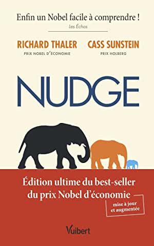
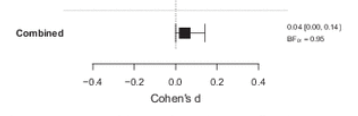

Numero 1
![]()
En 2017, Richard Thaler et Cass Sunstein reçoivent le prix d’économie en hommage à Nobel pour leurs travaux sur les nudges, la méthode douce pour inspirer la bonne décision.
“Enfin un Nobel facile à comprendre ! “ selon les Echos.

Les Nudges sont des coups de pouce permettant d’améliorer “un peu” la bonne décision. Mais bonne par rapport à quoi ? Beaucoup de discussions politiques et morales se sont attelés à répondre à cette question.
Parfois, la bonne décision signifie ne pas gâcher de la nourriture, économiser de l’argent, éteindre les lumières, jeter sa cigarette dans un cendrier… Bref, de manière générale, le nudge est un dispositif qui pourrait permettre de changer un peu le comportement pour le bien de la personne ou le bien commun.
De nombreux gouvernements (pas les français) ont rapidement compris l’intérêt des nudges parce que si on peut faire en sorte que les gens fassent des trucs mieux pour pas cher, c’est super. Ils ont créé des nudges units, des institutions publiques ou privées, parfois directement rattaché au gouvernement, parfois à une université, testant les nudges dans différents lieux. Leur intérêt principal réside dans le fait qu’ils sont pragmatiques : ils testent le nudge directement en situation réelle, et ont la possibilité de l’étudier dans de nombreux contextes différents, au contraire des chercheurs en laboratoire qui ont l’avantage de pouvoir contrôler les autres facteurs, mais sont limités dans leur capacité à obtenir de nombreuses données.
ça fait maintenant 10 ans que les nudges sont étudiés (le livre sur les nudges date de 2012), il serait temps de faire le point : ça marche ou pas ?
Cette année, un article publié dans PNAS propose de faire la méta-analyse de toutes les études ayant travaillé sur les nudges.
https://www.pnas.org/doi/abs/10.1073/pnas.2107346118
Ils ont trouvé plus de 200 études et un effet moyen de d = 0.43. Si vous ne savez pas ce que ça représente, sachez que l’effet moyen en psychologie sociale est d = 0.33.
Donc le nudge, le coup de pouce qui augmente très légèrement les bons comportement, aurait un effet bien plus fort que les autres effets en psychologie sociale ?
En fait, il y a deux gros problèmes dans cette étude. En premier, les chercheurs n’ont pas corrigé les biais de publication. ça tombe bien, d’autres chercheurs l’ont fait et la taille d’effet corrigée est d = -0.01 selon certains, 0.04 pour d’autres donc pas d’effet du tout.
https://www.pnas.org/doi/abs/10.1073/pnas.2200732119

https://www.pnas.org/doi/abs/10.1073/pnas.2200300119
mais tout ça est de l’ordre de l’analyse statistique. le plus gros problème c’est … qu’on ne peut pas faire de méta-analyse des nudges.
Une méta-analyse est une procédure particulière qui doit être fait sur des effets parfaitement identiques. Si je veux tester si les fruits sont bons pour la santé, et que je prends des tomates et des châtaignes plutôt que des fraises et des abricots, est ce que je teste vraiment si les fruits sont bons pour la santé ?
C’est que la question est mal posée. on devrait dire “est ce que les fruits que l’on consomme uniquement en dessert de manière raisonnables le midi et le soir sont bonnes pour la santé?” et encore ça serait difficile à tester. De même, se demander si les nudges fonctionnent, c’est mélanger des choses qui ne se mélangent pas. on pourrait se demander si tel nudge particulier dans telle condition fonctionne, mais pas tous en même temps. C’est aussi le point de vue de datacollada qui a fait un billet de blog sur les “méta-analyses qui n’ont pas de sens”
Mais les nudges, ça fonctionne ou pas ?
Avant de faire un doctorat, Elizabeth Linos a travaillé dans deux nudges units.
Elle a écrit un article en 2019 dans laquelle elle se propose de comparer les tailles d’effets des nudges units aux tailles d’effet dans les articles publiés par des chercheurs dans le milieu académique. Elle a trouvé que le nudge modifiait le comportement dans 8.7% des cas pour les articles publiés par des chercheurs (beaucoup moins selon datacolada, plutôt 6%), et … 1.4% dans les nudges units.
Si datacolada pense également que cette étude n’a pas de sens, Linos et Dellavigna ayant aussi comparé des tailles d’effet incomparables, ils l’ont du moins fait et pour les nudges units, et pour les chercheurs académiques, ce qui permet de les comparer.
Ce résultat montre comment le système de la recherche académique pousse à trouver des tailles d’effet énormes par le biais de pratiques de recherches questionnables (de la triche consciente ou non), le manque de participant, et le file-drawer problem - le fait de ne publier que les études qui fonctionnent, alors même qu’on ne sait pas si les nudges fonctionnent, ou lesquels.
Enfin, que cela soit la méta-analyse de PNAS ou la publication de Linos et Dellavigna, elles ont toutes les deux inclues des articles rétractés, dont ceux de Wansink, qui a pourtant été licencié de son université pour avoir falsifié une grande partie de ses études, 18 ayant été rétractés. c’est aussi la preuve (un peu amère), que la science ne s’auto-corrige pas ou très lentement, laissant des fausses études inclues dans des analyses alors qu’elles ont été rétractées.
Bref, si ce fil ne donne pas beaucoup d’indications sur le fonctionnement des nudges, il permet au moins de se questionner sur les problèmes de la recherche académique. # Newsletter
Si vous avez apprécié ce billet de blog, vous pouvez vous abonner à ma newsletter:
Citation
@online{fillon2023,
author = {Adrien Fillon},
title = {Numero 1},
date = {2023-07-03},
url = {https://linktr.ee/adrienfillon},
langid = {en}
}